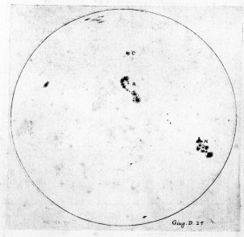
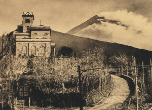
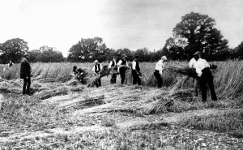
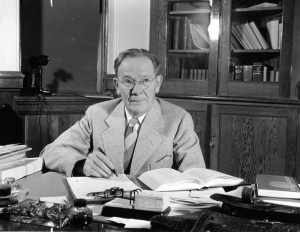
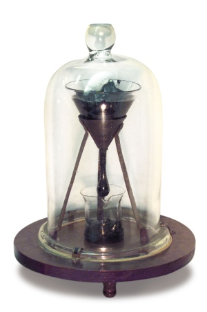

缓慢的科学研究
Table of Contents
原文:
- Slow Science, by Brian Owens, Nature 495, 300–303 (21 March 2013), http://dx.doi.org/10.1038/495300a
- http://www.nature.com/news/long-term-research-slow-science-1.12623
世界上进行时间最长的实验提醒我们，科学不是一次短跑冲刺，而是一场马拉松。
若想聆听这些实验的播客 (podcast), 请访问 http://go.nature.com/jlada7
尽管科学是一项长期的事业，但研究工作通常会在短期内完成：一个独立的实验，或者是一项受到资金支持时间限制的自备项目。但有些调查不可能一蹴而就。例如，研究人类的生命期限、地表及太阳表面的变动，则会需要数十年甚至数百年。
《自然》在这儿回顾一下五个运行时间最长的科学项目，其中一些已经持续积累了几个世纪的数据。一些项目每年产生数百篇文章；而某个研究十年才产生一个数据点。
运行这种速度的实验要受到转移研究权限与技术的挑战，其存在通常要受到资金干涸与管理人员变更的威胁。但启动项目的科学家们的远见、接过火炬者的耐心与献身精神让它们持续了下来。那些参加项目的关键科学家如果足够长寿——就像一项持续了 90 年的寿命研究所预测的那样——他们还可能在有生之年看到一些研究成果。
400 年: 太阳黑子记录

Figure 1: 伽利略最早于 1613 年始开始记录太阳黑子。 (UNIVERSAL HISTORY ARCHIVE/UIG/BRIDGEMAN ART LIBR.)
自从 400 多年前发明望远镜以来，天文学家就开始记录太阳黑子现象；实际上伽利略就已经记录了自己的观测。但早期观测者并不知道太阳表面的黑斑是什么，也没有制造黑子的磁场知识。这从 1848 年开始了转变，瑞士天文学家卢道夫·沃尔夫开始系统地观测，并开发了一个至今仍在使用的公式，它用于计算国际太阳黑子数，也称为沃尔夫数，该数对太阳随时间的活动改变给出了一个测度。
2011 年，弗里德里克·克莱特成为太阳影响数据分析中心的主任，该中心在于克勒，从属于比利时皇家天文台，该中心收集整理了太阳黑子计数，包括照片以及从公元 1700 年以来 500 多位观测者所手绘的太阳表面图像。
加利福尼亚斯坦福大学的一名太阳物理学家赖夫·斯伐加德声称，这些数据对于预测太阳黑子活动有不可估量的价值。太阳活动显现出增强与衰退的周期大约在 11 年左右，而太阳黑子喷向太空中的带电粒子流会影响卫星及地球上的电子设备。详细的记录帮助研究者理解了为什么会存在这样的周期，也帮助了更精确地预测特别强烈的事件。“持续的时间越久，我们进行理论的检验就会越好，”斯伐加德说道。不止在太阳物理领域，包括地磁学、大气科学和气候科学等领域每年约有 200 篇文章引用到太阳黑子数据。
但这项事业主要依靠信誉在进行。比利时的数据中心每个月整理的数据来自于大约 90 名观测者，其中的三分之二为业余成员，他们使用的小型光学望远镜比 200 年前的强不了多少。尽管位于巴黎的国际科学理事会承认这个世界数据中心，它却未得到这个组织的任何资助。柯莱特与其他的业余人员一起维护着这个数据库，不过他的“晚班”是比利时皇家天文台的天文学家。
但是，柯莱特说，与几百年前的人一起“工作”仍然令人激动。比如，他说，尽管伽利略所覆盖的太阳表面绘图质量欠佳，因为他“忙于行星和其它的事情”，但绘图的细节却足够用于发现黑子群组的磁场结构信息和星球极矩的大小与倾斜。“你从这些绘图中能够提取到的信息与当今绘图中所能提取到的一样”，他说。
不仅如此，他还对祖先们的远见很感兴趣。他们忠实地记录所观察到的现象，认为这些东西以后会有用，他说。“这是科学中非常重要的一面，”他说，“不为最终的结果担心。”
170 年: 对火爆巨人的监测

Figure 2: 现在的博物馆，曾经是维苏威观察站，用于在山的一侧监测火山活动 (Fratelli Alinari 博物馆，佛罗伦萨)
尽管一直都在活动中，每几千年，维苏威火山都会有一次大型的喷发。最近的一次在公元前 79 年，它的火焰吞掉了庞贝，而在此前的一次，大约是 3800 年前，它用热的气浪和岩石覆盖如今的整个那不勒斯地区 (参见 Nature 473, 140-141; 2011)。维苏威观测站，世界上最古老的火山研究站，自 1841 年以来就在监测着它的危险问题，记录所有的火山地震噪声，试图找到潜在的危机。观测站最初位于火山一侧 600 米高处，它离山顶足够远以避开火山喷发的碎片，且位于一个山丘足够高处以避开岩浆，它的位置很符合火山学与一地质学，当前的主任马切罗·马提尼这样介绍。
西多尼欧·莫罗尼，观测站的首任主任，对岩浆的磁性做了开创性的工作，这对后来的古磁学研究至关重要——古磁学研究的是记录在岩石中的地球磁场历史。1856 年，第二任主任卢伊吉·帕尔米里发明了电磁地震仪，它相比以前的设备对地面震动非常敏感，这有助于他进行喷发预测。在帕尔米里及继任者努力下，观测站对世界上监测火山的许多仪器的研发做了许多贡献。例如，在二十世纪早期朱塞佩·麦加利所开发的地震烈度至今仍用在火山活动的分类中。
但观测站建筑本身已经不再承担以前的角色了。“起初，尽可能靠近活动区域很重要，但现在就不再如此了，”罗德岛大学金斯敦校区的一名火山学家哈罗多·西古德松介绍说。现在，大部分监测都能通过远程地面传感器进行，数据可及时传回那不勒斯的地球物理与火山学国家研究院的实验室。原始的建筑自 1970 年起成为博物馆。
除了为科学理论提供资料之外，观测站还用于预测危险以保护民众——正如他们 1944 年的成功一样。那不勒斯的实验室里，科学家们每天 24 小时当值，还监测着西西里岛北部的斯通波利山，那不勒斯西部坎皮·弗雷格雷超级火山，和伊斯基亚岛。然而，西古德松介绍说，未来的火山学不再依赖铺设在已知的危险火山周围的那些传感器，而是依赖基于卫星的雷达，它可以研究任意地点的地面形变并挑选出地理学家未预料到的危险区域。“我们应该发展成国际合作的火山监测体系，它不应束缚在火山边上的砖块泥浆上，而应该站在全球的角度综合考虑”，他说。
170 年: 收成数据

Figure 3: 洛桑自 1843 年始即成为研究肥料对小麦产量影响的实验基地
长期研究项目的管理人需要维持工作的完整性，也需要保持其中的关联性。这就是安迪·麦克唐纳所遇到的情况，他于 2008 继承了一组农业实验，它们从 1843 年起就一直在测试矿物肥料和有机肥料对农作物产量的影响。
这些实验由肥料巨头约翰·拉维斯发起，在他伦敦北部洛桑的田产中进行，这些研究已经测试了氮、磷、钾、钠和农家肥对几种主要作物产量的影响，包括小麦、大麦、豆类和块根类作物。
“二三十年后，相关重要肥料的许多基本问题已经很清楚了，”麦克唐纳说，他目前是洛桑研究正在运行的‘经典实验’的管理者。氮的作用最大，其次是磷。因此，实验会周期性进行更新以测试新的想法，并保持与当前农业生产实践的关联性。比如，1968 年，实验一开始即采用的长杆谷类作物被高产的短杆谷类代替，后者当时已被农场主普遍采纳。麦克唐纳介绍说，这些作物证明比传统栽培需要更多的肥料，因为它们从土地中要汲取更多的养分，农场主们必须适应这些。
“洛桑实验是长期农业研究的祖先，”菲尔·罗伯逊说，现任 W.K. 凯洛格生物站的主任，这是个位于 Hickory Corners 的密歇根州立大学内一个长期农业研究站。不间断的数据链是无价的，他说。不仅是因为洛桑能够研究环境和生物趋势——比如土壤中的碳存储或外侵特种的作用——这些只有经历很长时间才能显现，而且它也能够提供一个短期研究平台，比如，土壤中的硝酸盐流失。
洛桑档案持有大约 30 万种保留的植物和土壤样品，这些自实验开始就一直在收集。2003 年，科学家从 1843 年保存的档案样品中提取了两种小麦病原体的 DNA, 证明了工业二氧化硫排放的影响很显著。
让资助单位持续感兴趣很困难。洛桑采用一种混合筹资方式，由政府资助、竞争资助及拉维斯临终前所创立的信托基金构成。“作为资助方，即便在不可能出现令人激动的成果期间，你仍然要维持对项目的关注”，罗伯逊说，去年他曾参与建立了美国农业部的长期农业—生态系统研究网络。麦克唐纳和他的团队对自己的历史很自豪。“我有时想回到约翰·拉维斯的年代”，麦克唐纳说。“我感到保障实验以良好的条件传递给下一代是个巨大的责任。它们不是博物馆展品，它们是我们现存科研社区的一部分。”
90 年：天才成长期

Figure 4: 刘易斯·推孟开始了最长的人类发展研究之一 (斯坦福大学档案馆)
从 1921 年开始，加利福尼亚斯坦福大学的心理学家刘易斯·推孟开始追踪 1500 名天才儿童的成长轨迹——以他开发的斯坦福比奈智商为标准——出生于 1900 至 1925 年间。这是世界上最初的纵向研究之一，并已经成为人类发展最长的深入记录，已经追踪了参加者九十年——检查了他们的生活、教育、兴趣、能力和人格。
推孟在他的《天才基因的研究》中一个主要目标就是反驳那些常见的假设，就是天才儿童存在令人讨厌的社交障碍，不够成熟。但即便以他那个年代的标准，研究设计也存在诸多毛病。他的选择方法是随意的，导致测试主要依赖老师的推荐，样品不具有代表性（其中 90% 是白人和上层或中层阶级，推孟甚至把自己的孩子也登记了）。更甚的是，推孟还改变了他所研究对象的生活，给他的“白蚁们”写推荐信使得参加者了解了实验，并帮助了几个进入了斯坦福。
通过追踪儿童到成年，推孟表明他们与一般人一样健康且适应环境，一般都能成功地长大成人。并且，随着项目进展，研究者想办法努力修正了其中的一些缺陷。
例如 20 世纪 80 年代，在马萨诸塞州波士顿的哈佛大学医学院，一名心理学家乔治·范伦特开始使用推孟的数据来补充自己对成人发展的长期研究，并开始收集推孟对象的死亡证明。通过这些记录，河边市加利福尼亚大学的一名心理学家霍华德·弗里德曼能够紧跟上推孟研究中的多数重要发现。他表明责任心——换句话说即谨慎、坚持和计划性——无论在童年还是成年，都是对寿命进行预测的关键心理因素，额外增加的寿命可达六或七年。“若没有长达一生时间的纵向观测数据根本无法发现”，范伦特说。
纵向研究会受到科学潮流的波及，劳拉·坦森，斯坦福长寿中心主任说。新的研究者会添加新的测量，修改或删除那些他们认为不再感兴趣或者过时的内容。“比如，我们今天会采用与 1900 年非常不同的方式来测量情绪的良好程度”，她说。故从多个角度来看，“查看一组纵向研究数据就象在撰写心理学史一样。”
85 年：滴落等候

Figure 5: 自 1927 年始沥青液滴实验只产生了八滴 (昆士兰大学约翰·S·梅因斯通)
1961 年，在澳大利亚布里斯班的昆士兰大学工作的第二天，物理学家约翰·梅因斯通偶遇一个奇怪的小实验，它已经在一个橱柜中静静地运行了 34 年。十五年后，他仍然在照看这个实验——始终在等待验证它引人注目的活动。
沥青液滴实验由托马斯·帕奈尔发起，他是该大学的第一位物理学教授，为了向他的学生们表明一种沥青样品，一种焦油馏出物，尽管在冷却时可以用锤子敲碎，但还会象液滴一样流过漏斗滴落到底部，就象世界上最慢的水漏一样。它确实会滴落，以每 6 年至 12 年一滴的速度。帕奈尔预计——非常谨慎地——今年底可能会落下第九滴。
这个实验不会有太多的发现。86 年来，它只产生了一篇科学论文，其中计算了该沥青比水要粘稠上 2300 亿倍。而在 2005 年，它获得了搞笑诺贝尔奖 (参见 Nature 437, 938-939; 2005), 一个对诺贝尔奖的搞笑模仿。
然而，仍然有一些科学内容可以收获。没有人见到过液滴落下——最近一次在 2000 年十一月滴落时尝试用摄像头记录实验失败了——因此，当液滴从沥青本体分离时究竟发生了什么仍然不清楚。另外仍然需要约几十年时间来搞清楚天气、引入的空调和楼体的装修振动对液滴速度的影响。
但梅因斯通说，实验的价值不在科学上，而在它的历史和文化影响：它激发了雕刻家、诗人和作家对时间流逝和现代生活节奏的沉思。它还与科学历史和不懈的坚持紧密关联。“当世界历经种种混乱时，它仍然一如继往地专注已事”，梅因斯通说。由于漏斗中存留的沥青还很多，这个实验有望在忽略外部的混乱中平静地再渡过另外 150 年左右。幸运的是，现年 78 高龄的梅因斯通已经说服了一位年轻同事在他逝后继续照看实验。
附注
- 翻译完成日期: 2013-07-12
- 科学公园于 2013-07-28 登出: http://www.scipark.net/archives/8657
- 科学公园的版本经过 @叮当蓝色鱼 校对，与此处版本略有不同。